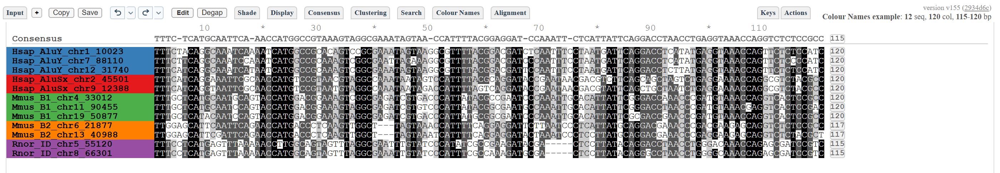

1. Getting Started
1.1 What is ViewAlign?
ViewAlign is a browser-based application for viewing, editing, and analysing multiple sequence alignments. It handles DNA, RNA, protein, and coding sequence (CDS) data - from a handful of sequences to thousands. No installation is required; the viewer runs entirely in your browser. An optional local Node.js server adds MAFFT realignment, BLAST search, SSH remote access, and BAM/CRAM support.
Key capabilities:
- View - Four visualisation modes: Full (single-pane), Block (fixed-width), Canvas (high-performance for massive alignments), and Reads (IGV-style read packing for SAM/BAM data).
- Edit - GeneDoc-style residue editing, Move/Slide tools, undo/redo
- Analyse - Statistics, copyable distance matrices, codon analysis, dot plots, repeat/TSD finder, tree builder, restriction site search, subfamily clustering
- Colour - Monochrome conservation shading plus nucleotide, purine/pyrimidine, ambiguity, and amino-acid colour schemes
- Export - FASTA, RTF (Word-compatible), SVG (vector), Newick trees, standalone HTML snapshots
1.2 Loading an Alignment
You can load data in any of these ways:
| Method | How |
|---|---|
| Paste & Load | Paste FASTA or MSF text into the Input textarea and click Load (or press Ctrl+L) |
| Drag & Drop | Drop a file onto the drop zone - supports .fasta, .fa, .aln, .msf, .sam, .gb, .gbk |
| File Picker | Click the drop zone to browse for a file |
| URL | Paste a URL to a raw alignment file and click Load URL |
| SAM Paste | Paste SAM text directly - auto-detected and parsed with CIGAR expansion |
| SSH Remote | Fetch files from a remote server via SSH (requires server with SSH configuration) |
| BLAST Retrieval | Retrieve GenBank sequences by accession and align them automatically |
1.3 Supported Formats
| Format | Extensions | Notes |
|---|---|---|
| FASTA | .fasta, .fa, .aln | Standard FASTA with > headers; interleaved OK |
| MSF | .msf | GCG Multiple Sequence Format with header block |
| SAM | .sam | Tab-separated alignment records; auto-detected, CIGAR-expanded |
| BAM / CRAM | .bam, .cram | Via server POST /api/bam2sam (requires samtools) |
| Clustal | .aln | ClustalW format with CLUSTAL header |
| PHYLIP | .phy | Interleaved and sequential PHYLIP formats |
| NEXUS | .nex, .nexus | NEXUS DATA block with matrix |
| Stockholm | .sto, .stockholm | Pfam/Rfam Stockholm format with #=GC markup |
| GenBank | .gb, .gbk | Flatfile import from LOCUS/FEATURES/ORIGIN; accession lookup can also retrieve GenBank records |
1.4 Interface Layout
The interface has a collapsible menu bar at the top and the alignment viewport below. Press Ctrl+H to hide or show the menu bar; press Ctrl+I for the keyboard shortcuts reference.
The menu bar is organised into dropdown sections:
| Menu | Purpose |
|---|---|
| Input | Load, save, import, export - file handling and snapshots |
| Alignment | MAFFT realignment, BLAST, add sequences, degap |
| Clustering | Trim alignment ends, subfamily clustering, parameter presets |
| Shade | Black/Dark/Light conservation shading thresholds and colours, and the All/Non-Gap conservation calculation mode (§5.3) |
| Display | View mode, zoom, name length, Sticky Names, codon toggle, variable sites filter with percentage threshold and breakpoint markers |
| Consensus | Consensus line settings, group consensus computation |
| Search | Motif search with regex and mismatch support |
| Edit... | Edit mode toggle, degap button, GeneDoc-style editing tools |
| Actions | Selection, sorting, analysis (dot plot, TSD finder, tree), colour schemes, cluster operations, export |
The top-right corner shows the current application version and the loaded file name.
1.5 Recent Files & History
Click the Recent button to open the history dropdown.
It tracks every alignment loaded - by paste, file, URL, SSH, or BLAST -
and stores timestamps and sequence counts. Click any entry to reload it instantly.
History persists across browser sessions via localStorage.
1.6 Recent Updates
Recent updates added or improved the following features:
- Tree drawing - the Tree window now draws the tree with zoom, rooted and unrooted (equal-angle) layouts, branch swapping, re-rooting on a clicked branch, a resizable box, full screen, and SVG or PNG export of the picture.
- Faster editing - Move and Slide dragging, entering and leaving Edit Mode, and undo/redo are no longer slowed by alignment size; conservation shading now drops only on residues a drag actually moved, instead of the whole row.
- Variable-sites threshold & breakpoint markers - percentage-based slider (0–100%) controls minimum variation for a column to be shown; breakpoint separators (⋮) indicate where conserved columns were hidden.
- BLAST search with database management - right-click BLAST search with dynamic local database creation (makeblastdb), add/remove databases from the viewer, batch BLAST against all databases.
- Restriction Sites search in the Search menu, with 50 common enzymes, manual site input, IUPAC ambiguity support, and optional reverse-complement search.
- Reads view mode for SAM/BAM data with IGV-style read packing and CIGAR-expanded match/mismatch colouring.
- Tree Builder supports both UPGMA and Neighbor-Joining with three distance correction models (p-distance, Jukes-Cantor, Kimura 2-parameter).
- Statistics now includes copy-to-clipboard buttons for p-distance and identity matrices.
- Display colour schemes now include Monochrome, Nucleotide, Purine/Pyrimidine, Nucleotide Ambiguity, Clustal-like amino acid, and Jalview-like amino acid modes.
- Colour Names panel with pattern matching, auto-similarity grouping, colour presets, sort-by-colour, group-at-top, and colour history inspector.
- Repeat Finder for tandem, direct, and inverted repeats with configurable parameters.
- GenBank import now parses sequence metadata and common FEATURES more reliably, including multi-line qualifiers.
- Protein FASTA handling preserves amino-acid residues instead of treating them as nucleotides.
- Reliability fixes improved parser robustness (FASTA BOM/CR handling, PHYLIP interleaved continuation lines, Clustal/MUSCLE header detection), state reset on new file load, conservation cache invalidation, undo tracking, and version display.
2. Input Menu
The Input menu is the starting point for loading data into the viewer. It appears as the leftmost dropdown in the menu bar.
2.1 FASTA / MSF Input
Paste your alignment directly into the textarea. Both FASTA and MSF formats are auto-detected. Click Load (or press Ctrl+L) to process the data. The Clear button empties the textarea.
The viewer auto-detects sequence type (DNA, RNA, protein) from the residue composition
of the first few sequences. Protein FASTA input is preserved as amino-acid data; unknown
protein characters are normalised to X rather than converted to nucleotide
ambiguity characters.
GenBank flatfiles can also be pasted directly. Records beginning with LOCUS
are parsed for header metadata, FEATURES, and the ORIGIN sequence.
The imported sequence is displayed as a normal alignment row; feature coordinates are stored
with the parsed record for future annotation features.
2.2 File Loading
The drop zone accepts files via drag-and-drop. Click the zone to open a file picker. Supported file types are detected by extension and content inspection. After loading, the file name appears in the top-right info panel.
2.3 URL Loading
Paste a URL to a raw alignment file (e.g., a GitHub raw link or a public server path)
and click Load URL. The viewer fetches the file via fetch()
with CORS restrictions.
2.4 SSH Remote Loading
When the server is running with SSH configuration, an SSH row appears in the Input menu.
Select a server, enter a file path, and click Fetch or press Enter.
The file is read via cat on the remote host and streamed to the browser.
..) and shell metacharacters are
blocked. Files are never written to disk on the server.
2.5 SAM / BAM / CRAM
SAM text can be pasted directly - it is auto-detected by the tab-separated format and parsed with full CIGAR expansion (insertions, deletions, soft/hard clips).
BAM / CRAM files require the server endpoint POST /api/bam2sam,
which uses samtools view -h to convert to SAM text. The resulting SAM is
then parsed and displayed client-side.
2.6 Snapshots (Save & Load)
Snapshots capture alignment data, zoom, conservation settings, colour scheme, selected rows/columns, search highlights, and custom colour assignments. They are stored as JSON files. Only the Full and Block view modes are restored - a snapshot taken in Canvas or Reads mode reopens in Full/Block.
- Save Preset (Ctrl+S) - save current state as a named snapshot
- Load Preset (Ctrl+O) - restore a saved snapshot
- The snapshot dropdown lists all saved snapshots; click to preview, double-click to load
Snapshots persist in localStorage and can be exported/downloaded as JSON files.
On GitHub Pages, snapshot listing is loaded from snapshots/index.json. If no
shared snapshots are available, the viewer shows an empty list instead of a failed request.
2.7 Save / Export Alignment
Save the current alignment to a file from the Actions menu (see §9.8).
Supported output formats: FASTA, RTF, SVG, Newick (.nwk), and standalone HTML snapshots.
MSF is supported for input only; save as FASTA and convert if you need MSF output.
3. Alignment Menu
The Alignment menu contains tools for realignment, sequence addition, BLAST retrieval, and degapping.
3.1 Real-Time Alignment
Two alignment engines are available:
- Browser-based (MAFFT WASM) - runs MAFFT directly in the browser via WebAssembly. No server required. Select from the strategy dropdown and click Align. Suitable for alignments up to ~200 sequences x ~2,000 columns. auto picks a strategy based on your input size and is the right choice unless you have a specific reason to override it. FFT-NS-2 is the fastest, progressive-alignment strategy - good for large or already-similar datasets. G-INS-i, L-INS-i, and E-INS-i are slower, more accurate iterative-refinement strategies for smaller alignments (roughly under 200 sequences): G-INS-i assumes the sequences are globally similar end-to-end, L-INS-i assumes only local, patchy similarity (e.g. a shared domain in otherwise divergent sequences), and E-INS-i additionally allows large, unaligned insertions between conserved blocks.
- Server-based MAFFT - when the Node.js server is running, alignment requests are sent to the server which executes the native MAFFT binary. Handles larger datasets and supports additional strategies.
3.2 Advanced MAFFT Options
The server-based MAFFT supports fine-grained control:
| Option | Effect |
|---|---|
| Strategy | auto, FFT-NS-2, G-INS-i, L-INS-i, E-INS-i |
| Gap open penalty | Controls the cost of opening a new gap |
| Gap extension penalty | Controls the cost of extending an existing gap |
| Max iterations | Number of iterative refinement passes |
| Add-keep-length | When adding sequences: keep existing alignment length (no re-alignment) |
3.3 Adding Sequences
Click + Add Seq to open the "Add Sequences" modal. Paste one or more FASTA sequences. Options:
- Just Add - append sequences padded with gaps at the end
- Add & Align - realign the full alignment with MAFFT using add-keep-length mode
- Align to consensus - align new sequences against the existing consensus before adding
- Place at top - insert new sequences at position 1 instead of the bottom
3.4 BLAST Search
Run BLAST directly from the viewer. Right-click a sequence name and select BLAST, or use the Alignment dropdown.
Search runs in the browser. The dialog lists the databases registered on the optional
local server (GET /api/blast-db); each database is served as a plain FASTA
URL, which a Web Worker downloads and caches in IndexedDB, so the first query against a
database is slower than subsequent ones. Scoring uses Smith-Waterman local
alignment - a standard algorithm that finds the best-matching sub-region between
your query and each database sequence, rather than requiring the two to align end-to-end.
Batch search against every registered database at once is also supported.
- Optional acceleration - if the NCBI BLAST+ suite is installed on the
server, databases can be indexed with
makeblastdband queried withblastninstead of the in-browser worker - Server required - BLAST needs the Node.js server running. On the static GitHub Pages deployment the dialog reports "Server not available - no BLAST databases"
Results appear in the same dialog as a ranked list, each with a short preview of the matched region aligned against your query; click a result to add that sequence to your alignment.
3.5 BLAST Database Management
The BLAST dialog dynamically fetches database lists from the server. Click + Manage Databases to open a management modal:
- List databases - view all configured databases with availability status
- Add database - upload a FASTA file, set a name and description; the server runs
makeblastdbto index it - Delete database - remove a database and its BLAST index files (
.nhr,.nin,.nsq, etc.)
Database metadata is stored in blast_dbs.json and FASTA files/indexes in
blast_dbs/. Unavailable databases are shown greyed out.
3.6 Degap Alignment
The Degap button removes all gap columns from the alignment. This is useful for extracting ungapped sequence blocks for downstream analysis. The operation is undoable (Ctrl+Z).
3.7 Re-align Against Consensus
Right-click a sequence and select Re-align against consensus to realign that single sequence against the alignment's consensus profile using MAFFT. This is useful for re-positioning a sequence that may have drifted or been misplaced without re-aligning the entire dataset. Requires the server or WASM MAFFT.
4. Clustering Menu
The Clustering menu provides alignment trimming and subfamily clustering for transposable element annotation and evolutionary analysis.
4.1 Trimming Parameters
Trim ragged alignment ends before clustering to prevent gap-based artefacts:
| Parameter | Default | Meaning |
|---|---|---|
| Left Trim Gap % | 50 | If the sliding window at the left edge has >= this % gaps, trim those columns |
| Right Trim Gap % | 80 | Same for right edge (more permissive by default, since right ends are often ragged) |
| Edge Window | 15 | Number of consecutive columns checked at each edge |
Use Preview to see which columns would be trimmed without applying changes. Trim removes them; Undo reverses. Both are undoable.
4.2 Basic Clustering Parameters
| Parameter | Default | Meaning |
|---|---|---|
| Min Size | 3 | Groups smaller than this are not considered clusters |
| Min Features | 5 | Minimum number of diagnostic positions (unique nucleotide patterns) a cluster must have |
| Max Iter | 10 | Number of clustering rounds with progressively relaxed quality thresholds. More iterations recover smaller families |
4.3 Quality Thresholds
Quality thresholds control how many cluster members must share a given nucleotide pattern for it to be considered a diagnostic feature. Higher values = stricter, fewer but cleaner clusters.
| Parameter | Default | Applies To |
|---|---|---|
| Small | 80% | Clusters of 10 or fewer sequences |
| Medium | 70% | Clusters of 11-19 sequences |
| Large | 60% | Clusters of 20 or more sequences |
Three quality tiers allow tighter thresholds for small clusters (where fewer sequences must agree) and looser thresholds for large clusters (where perfect agreement is unlikely).
4.4 Size Breakpoints
| Parameter | Default | Meaning |
|---|---|---|
| Small -> Medium | 11 | Clusters below this size use the Small quality threshold |
| Medium -> Large | 20 | Clusters at or above this size use the Large quality threshold |
| Min Occur | 3 | Minimum number of diagnostic positions required to form a cluster |
4.5 Presets & Workflow
Presets save and restore parameter configurations for reproducible analysis:
- Save - store current parameters under a name
- Load - restore parameters from a saved preset
- Defaults - restore the standard starting parameters (Min Size 3, Min Features 5, quality 80/70/60, Min Occurrences 3). These are the values already loaded when the panel opens; nothing here is tuned to your alignment
- Presets are stored in
localStorageand persist across sessions
Clusterability
A single clustering run cannot tell you whether the thresholds were too strict or whether the data simply has no structure this method can find - both come back as zero clusters. Clusterability answers that by running the clusterer across a spread of settings: each parameter varied on its own from your current values, plus the loosest combination the panel allows. It reports, for every run, how many clusters formed, how many sequences were assigned, and the largest cluster.
The summary above the table names three things:
- whether the alignment clusters at all, and under which settings it did best
- which parameters changed the outcome
- which parameters had no effect anywhere in their range - the useful half of the answer, since it tells you where further tuning is wasted effort
Typical workflow:
- Trim alignment ends with Preview -> Trim
- Adjust clustering parameters or load a preset
- If unsure whether the alignment can cluster, or if a run returns nothing, press Clusterability to see which settings are worth trying
- Click Cluster Now
- Review results (cluster sizes, diagnostic features, feature tables)
- Use Actions -> Colour by Cluster to visualise groups
- Compute Group Consensus for selected clusters
4.6 Understanding Results
The clustering algorithm works as follows:
- At each alignment column, sequences are grouped by shared nucleotide
- Groups meeting the size and quality thresholds are collected as candidate clusters
- Near-identical clusters are fuzzy-merged (Jaccard similarity >= 90%)
- Perfect-unique positions (all cluster members share a base unique to that cluster) get highest weight
- Outliers matching <50% of core cluster features are pruned
- The algorithm iterates with progressively relaxed thresholds to recover smaller families
After clustering:
- The results panel shows cluster sizes, diagnostic mutation tables, and per-cluster feature statistics
- Hovering a cluster row highlights all member sequences in the alignment
- Colour by Cluster (Actions menu) assigns persistent background colours to sequence names by cluster membership
- Group Consensus (Consensus menu) computes and inserts a consensus row for any selected cluster
5. Display Menu
The Display menu controls how the alignment is rendered: view mode, visual overlays, zoom level, and name display options.
5.1 View Modes
| Mode | Best For | Description |
|---|---|---|
| Full | General browsing, small alignments | Continuous single-pane view. All sequences in one scrolling block. |
| Block | Publication viewing, wide alignments | Fixed-width blocks (adjustable via Block Size slider, 40–300 chars). Sequence names repeat per block. |
| Canvas | Massive alignments (>= 150,000 residues) | Auto-activates for very large datasets. Canvas-based rendering for performance. |
| Reads | SAM/BAM read data | IGV-style read packing view. Displays reads as horizontal bars with CIGAR-expanded match/mismatch/indel colouring. Activated automatically when SAM/BAM data is loaded. |
Mode switching is instant - no re-render delay. The Block Size slider adjusts characters per block in Block mode and is greyed out in other modes.
5.2 Highlight Diffs & Variable Sites
Use case: exploring a long alignment that has several diagnostic polymorphic columns scattered far apart, pigeonholed among long runs of similarity. The goal is to see all the significant columns together, in close visual proximity, in a single view - for this kind of inspection, highly-similar columns carry no diagnostic information and actively get in the way of comparing the columns that matter. Variable sites only removes every similarity column from view entirely, so the differences that were previously separated by long distances become directly observable next to each other.
Two checkboxes control visual filtering of conserved positions:
- Highlight diffs - dims fully-conserved columns to 40% opacity. Full and Block modes only, like Variable sites only below - Canvas and Reads use separate renderers that don't apply either overlay. Rapidly reveals where variation occurs.
- Variable sites only - hides conserved columns entirely, showing only positions with variation. Useful for scanning SNP-dense regions.
A column's "dominant pattern" is whichever state the largest group of sequences shares at that position - a specific base, or a gap. Gaps are not all treated alike: a gap that falls outside a sequence's own first-to-last real-base span (a leading or trailing gap, because that sequence simply doesn't reach this column) is missing data and is excluded entirely from the count. A gap that falls inside that span is a real deletion and is counted on equal footing with A/C/G/T, as a legitimate state in its own right - not specially exempted the way a substitution would be. A sequence counts as "differing" from a column if its own state (base or internal gap) isn't the dominant one. This matters most on alignments with substantial insertion/deletion variation - repeat or transposable-element families in particular - where indel polymorphism is often the majority of the real variation, not base substitution.
5.2.1 Variable-Sites Threshold
Next to the Variable sites only checkbox, a threshold slider (with a paired number box for typing an exact value) controls the minimum amount of sequences that must differ from the column's dominant pattern for it to be considered "variable". A small dropdown to its left switches what that number means:
- % (default) — a percentage of all sequences, 0-100 in 1% steps. 0% shows every column unfiltered; ≥20% requires at least a fifth of sequences to differ; ≥100% requires every sequence to differ. Percentages work consistently across alignments of any size: for a 5-sequence alignment ≥20% means at least 1 sequence, for a 200-sequence alignment it means at least 40.
- count — an exact absolute number of sequences, 0 up to the total loaded (the slider's range updates automatically). ≥1 shows a column the instant even a single sequence differs, with no rounding at all.
Percentage mode rounds up to a whole sequence count (Math.ceil), which
on small alignments can jump by more than one sequence between adjacent percentages
- e.g. at 10 sequences, both 10% and 11% look like reasonable neighbouring settings,
but they require 1 and 2 sequences respectively, so a column with exactly one
differing sequence can flip from shown to hidden across that single percentage
point. Percentage mode also has a related blind spot on real alignments: a region
can be biologically highly variable while spreading that variation across many
neighbouring columns, each affecting only a handful of sequences - staggered,
independent insertions in a repeat family are a common example - so no single
column ever reaches even a modest percentage threshold, and the whole region gets
hidden as if it were conserved. Switch to count mode and set it to
1 when a flagged "conserved" region looks suspicious on inspection -
it surfaces the individually-rare variants a percentage cutoff was built to filter out.
5.2.2 Breakpoint Markers
When Variable sites only is active, a Breakpoints checkbox
(enabled by default) inserts thin ⋮ separator columns between visible
variable columns where conserved columns were hidden. Each breakpoint shows a tooltip
with the count and position range of hidden columns (e.g. "12 columns hidden (positions 45–56)").
- Breakpoints preserve visual context — you can see where conserved regions were removed, not just that they are gone.
- Breakpoint columns are non-interactive: they cannot be selected, edited, or included in exports.
- Uncheck Breakpoints to glue visible columns together without separators (original behaviour).
Use case: the marker's default grey shading and ⋮ glyph are
a sensible default, but not always right for every screen or every printed figure - a
grey mark can be hard to spot against a busy background, easy to confuse with actual
sequence data at a glance, or simply not the house style for a publication figure. A
small ▾ button next to the Breakpoints checkbox opens a tiny popover
with two independent controls: a colour swatch for the marker's shading, and a symbol
dropdown (⋮, ¦, :, •, ❘,
or (empty) for no glyph at all — just a coloured strip marking where
columns were hidden). Both choices are saved and restored automatically the next time
you open the viewer.
Both features can be combined with Codon analysis (Full and Block modes only - see above).
5.3 Alignment Colour Schemes
The Color scheme dropdown controls residue colouring in the main Full and Block alignment renderers. The current conservation-based black/grey/white display is preserved as Monochrome (current) and remains the default.
| Scheme | Use |
|---|---|
| Monochrome (current) | Existing conservation shading using Black/Dark/Light thresholds from the Shade menu |
| Nucleotide | Distinct colours for A, C, G, T/U and N |
| Purine/Pyrimidine | Groups A/G as purines and C/T/U as pyrimidines; ambiguous bases are neutral |
| Nucleotide Ambiguity | Highlights IUPAC ambiguity codes such as R, Y, S, W, K, M, B, D, H, V and N |
| Amino Acid: Clustal-like | Groups amino acids by broad physico-chemical classes in a Clustal-inspired palette |
| Amino Acid: Jalview-like | Groups amino acids in a Jalview-style property palette |
The selected colour scheme is saved in presets and snapshots. Canvas mode keeps its own existing high-performance colouring behaviour.
Conservation calculation mode (the All/Non-Gap radio buttons next to Shade By - in the separate Shade menu, not this Display menu, alongside the Black/Dark/Light shading sliders):
| Mode | Behaviour |
|---|---|
| All (default) | Conservation is measured against every sequence in the alignment; a gap counts against conservation, the same way most MSA viewers compute percent identity. A column where most sequences are gapped cannot score highly conserved just because the few sequences that do have a base happen to agree. |
| Non-Gap | Conservation is measured only among sequences that have a base at the column, ignoring how many are gapped. A column where just 30% of sequences carry a base, all in agreement, scores 100% conserved under this mode even though 70% of the alignment has no data there - use with caution on alignments with a lot of missing data or indel variation (transposable-element/repeat families in particular). |
5.4 Codon Analysis
Activates codon-aware viewing for coding sequences (CDS). Your alignment must be nucleotide and its length must be divisible by 3.
Select the appropriate genetic code from the dropdown (15 variants):
| Code | NCBI Table | Key Differences from Standard |
|---|---|---|
| Standard | 1 | - |
| Vertebrate Mito | 2 | AGA/AGG = Stop, ATA = Met, TGA = Trp |
| Yeast Mito | 3 | ATA = Met, CTN = Thr, TGA = Trp |
| Mold Mito | 4 | TGA = Trp |
| Invert Mito | 5 | AGA/AGG = Ser, ATA = Met, TGA = Trp |
| Ciliate | 6 | TAA/TAG = Gln |
| Echino Mito | 9 | AAA = Asn, AGA/AGG = Ser, TGA = Trp |
| Euplotid | 10 | TGA = Cys |
| Bacteria | 11 | - |
| Alt Yeast | 12 | CTG = Ser |
| Ascidian Mito | 13 | AGA/AGG = Gly, ATA = Met, TGA = Trp |
| Flatworm Mito | 14 | AAA = Asn, AGA/AGG = Ser, TAA = Tyr, TGA = Trp |
| Chlorophyc Mito | 16 | TAG = Leu |
| Trematode Mito | 21 | TGA = Trp, ATA = Met, AGA/AGG = Ser, AAA = Asn |
| Scenedesmus | 22 | TAG = Leu, TCA = Stop |
When active, the following visual annotations appear:
| Feature | Visual |
|---|---|
| Codon positions (1st/2nd/3rd) | Blue / green / orange underlines |
| In-frame stop codons | Red background, white bold text |
| Frameshifts | Wavy red underline at indel positions that break the reading frame |
| Synonymous mutations | Green underline - amino acid unchanged relative to reference |
| Non-synonymous mutations | Double red underline - amino acid changed |
| AA translation row | Amino acid letters below each sequence; stops in bold red * |
5.5 Sticky Names
When enabled (default), the sequence name column remains fixed on the left while scrolling horizontally. This ensures you always know which sequence you are looking at.
5.6 Zoom & Reset
The Zoom slider controls font size from 50% to 200% using a logarithmic scale. Use the - and + buttons for fine adjustment, or keyboard shortcuts Ctrl+- and Ctrl++.
When zoom ≠ 100%, the percentage label turns bold blue. Click the percentage to instantly reset to 100%.
5.7 Name Length
Controls how many characters of each sequence name are displayed. The slider ranges from 3 to 60. Check No limit to show full names regardless of length. This only affects display, not the underlying data.
6. Consensus Menu
6.1 Consensus Display
The consensus line shows the most frequent residue (or gap) at each column. Toggle it with the Show consensus checkbox. Position it at the Top or Bottom of the alignment via the radio buttons.
Keyboard shortcut: Ctrl+B toggles the bottom consensus bar.
6.2 Thresholds & Coverage
| Parameter | Meaning |
|---|---|
| Consensus threshold | A residue must appear in >= this % of sequences at a column to be the consensus call. Below threshold, the position shows ? |
| Minimum coverage | A column must have >= this % of non-gap characters to be included. Below coverage, the position shows | |
6.3 Group Consensus
After clustering (see §4), you can compute a consensus for any selected cluster. The group consensus row is inserted into the alignment at the cluster's position. Useful for extracting representative sequences of each subfamily.
7. Search Menu
7.1 Motif Search
Type a sequence motif into the search box and click Find (or press Ctrl+F). Matches are highlighted in the alignment using the selected highlight colour. The total match count and positions are reported.
Search is case-insensitive and searches against degapped sequences (gaps are stripped before comparison).
7.2 Regex Search
Check the .* checkbox to interpret your search
as a JavaScript regular expression. Examples:
[AG]CGT- A or G followed by CGTATG.{3}TAA- ATG, any 3 bases, then TAA (in-frame stop search)GG[ACGT]{10,}CC- at least 10 bases between GG and CCTATA[AT]A- TATAWA (TATA box motif)
7.3 Mismatch Tolerance
The Mismatches input (0-10) allows approximate matching. A mismatch budget of 2 means up to 2 character differences are allowed in each match. Works with both literal and regex search modes.
7.4 Search Highlight Colour
Use the colour picker to choose the highlight colour for search results. Multiple searches (with Find not Clear Last) accumulate highlights. Use Clear Last (Ctrl+Shift+F) to remove the most recent search highlights.
7.5 Restriction Sites
Click Restriction Sites in the Search menu to search common restriction enzyme recognition sites across the loaded alignment.
- The popup includes 50 commonly used enzymes, each labelled with its recognition sequence.
- Use Manual enzymes/sites for additional enzymes. Enter comma-separated values such as
BspQI:GCTCTTC, GAATTC. - IUPAC ambiguity codes are supported in recognition sites, for example
GANTC. - Enable Search both strands to include reverse-complement matches.
- Results are highlighted in the alignment and reported as unique sites, affected sequences, and raw row matches.
8. Editing
The Edit menu and toolbar provide sequence editing capabilities with full undo/redo support.
8.1 Row Operations
| Action | Shortcut | Description |
|---|---|---|
| Select all | Ctrl+A | Select or deselect all sequences |
| Copy names | Ctrl+C | Copy selected sequence names to clipboard |
| Copy sequences | Ctrl+Shift+C | Copy selected sequences as FASTA |
| Delete | Ctrl+Del | Remove selected sequences (undoable) |
| Duplicate | Ctrl+U | Duplicate selected sequences (undoable) |
| Reverse complement | Ctrl+R | Reverse and complement selected DNA sequences |
| Move up | Ctrl+↑ | Move selected rows up by one position |
| Move down | Ctrl+v | Move selected rows down by one position |
| Move to top | Ctrl+Home | Send selected rows to the top |
| Move to bottom | Ctrl+End | Send selected rows to the bottom |
| Undo | Ctrl+Z | Undo last editing operation |
| Redo | Ctrl+Y | Redo last undone operation |
8.2 Column Operations
| Action | Shortcut | Description |
|---|---|---|
| Copy columns | Ctrl+Shift+V | Copy selected columns as FASTA block |
| Delete columns | Ctrl+Shift+D | Remove selected columns from all sequences (undoable) |
| Realign block | Ctrl+Shift+R | Realign selected columns with MAFFT (in-browser WASM; needs at least 2 columns selected, otherwise the browser's hard-refresh applies) |
Select columns by Ctrl+Click on any residue. Drag to select column ranges. Selected columns appear with a green background.
8.3 GeneDoc-Style Edit Mode
Toggle Edit Mode from the Edit menu or the toolbar. When active, these edit tools appear:
- Move NoGaps - drag residues without keeping intervening gaps. Equivalent to GeneDoc's "Arrange / MoveText".
- Slide KeepGaps - drag a segment while preserving its internal gap pattern. Equivalent to GeneDoc's "Move / SlideText".
-
Type - click a cell and type a residue letter (A, C, G, T, N)
or
-for a gap. Modifies the cell directly. - Ins Gap Seq / Del Gap Seq - click a position to insert or remove a single gap in that row only. Deleting requires a gap already at that position.
- Ins Gap Other / Del Gap Other - same, but applied to every row except the one you clicked.
- Ins Gap All / Del Gap All - same, applied to every row including the one you clicked.
- Select Column - click or drag to select columns, then use Delete Cols to remove them from every sequence.
- Clear Gap Cols - remove every column that is a gap in all sequences.
- R Cons - recompute conservation shading immediately (useful when Live Conservation, below, is off).
- SeqEdit - open the full-sequence text editor for the row you last clicked (see §8.5).
A Live Conservation checkbox updates conservation shading in real time during Move/Slide dragging.
8.4 Move & Slide Tools
Both tools act on the row you drag in - not on the current selection - and are controlled by dragging within the alignment viewport.
- Move NoGaps shifts the residues between the one you grabbed and the nearest gap in the direction you drag, closing that gap up. Residues on the far side of the grab point stay where they are, so the edit stays local.
- Slide KeepGaps inserts (dragging right) or removes (dragging left) a single gap at the grab point, so the whole remainder of that row shifts by one column with its internal gaps intact. Dragging left therefore does nothing unless there is a gap immediately to the left of the residue you grabbed - that requirement is what makes a left slide the exact inverse of a right one. If the row has no trailing gap to absorb the insertion, a right slide lengthens the whole alignment by a column.
8.5 Sequence Text Editor
Open the full-sequence text editor from the Edit menu. This provides a textarea with the raw sequence for the selected row, plus quick transformations:
- Degap - remove all gaps from the sequence
- Reverse - reverse the sequence order
- Complement - complement the sequence (DNA)
- Rev Comp - reverse and complement
- Uppercase / Lowercase - change case
- Pad/trim to alignment length - auto-adjust length on apply
8.6 Undo / Redo
Every editing operation - row delete, column delete, duplicate, move, slide, type, insert-gap, degap, trim - is tracked in an undo stack. Ctrl+Z steps backward; Ctrl+Y steps forward. The undo history is cleared when a new alignment is loaded.
The toolbar carries undo and redo arrows, each with a small caret beside it that opens the history list. Drag entries name the tool, how far the move went and which sequence it was on - for example MoveText 4 col right · NW_004567116.1… - so a move can be found without stepping through the stack one action at a time. Clicking an entry unwinds everything back to that point.
8.7 Degap Tool
The Degap button in the Edit toolbar removes all gap-only columns from the entire alignment. This is distinct from the SeqEdit degap (which operates on individual sequences). Alignment-wide degap is undoable.
8.8 Right-Click Editing
Right-clicking a sequence name or residue opens a context menu with editing options not available elsewhere:
- Rename sequence - inline edit of the sequence name. Colour mappings are automatically migrated to the new name.
- Replace N selected with consensus - replaces all selected sequences with a single consensus row (available when ≥2 sequences are selected)
- Add consensus below - inserts a consensus row after the selected group
- Re-align against consensus - realigns a single sequence against the alignment consensus profile using MAFFT (available in the right-click menu under analysis tools)
- Insert/Remove Single Gap - right-click a residue to insert or remove a single gap at that position in that row
9. Actions Menu
The Actions menu is the rightmost dropdown, containing selection tools, sort functions, analysis tools, colour schemes, and export options. It opens leftward to avoid going off-screen.
9.1 Selection
| Action | Shortcut | Description |
|---|---|---|
| Select All | Ctrl+A | Select or deselect all rows |
| Invert Selection | - | Swap selected and unselected rows |
| Select by Name | - | Select rows whose names match a pattern |
9.2 Sort Functions
| Sort | Description |
|---|---|
| A -> Z | Sort sequences alphabetically by name |
| Len v | Sort by sequence length, longest first |
| Sim v | Sort by similarity to the first sequence, most similar first |
9.3 Save / Load Order
The Exp (Export Order) button saves the current sequence order as a JSON file. Imp (Import Order) loads a previously saved order and reorders the sequences to match. This is useful for applying a curated ordering across multiple sessions or sharing ordering between collaborators.
9.4 Analysis Tools
| Tool | Description |
|---|---|
| New Tab | Open selected sequences in a new browser tab (Ctrl+T) |
| TSD Finder | Find target site duplications around SINE insertion boundaries |
| Tree | Build UPGMA or Neighbor-Joining trees from selected sequences. Three distance correction models are available: p-distance (raw), Jukes-Cantor (JC69), and Kimura 2-parameter (K80). Switching UPGMA/NJ or model in the modal rebuilds the tree. Outputs a drawn tree (see below), a text view, and Newick with Copy Newick and Download .nwk options |
| Statistics | Compute alignment statistics (esl-alistat/esl-alipid style): sequence count, alignment length, total gaps and gap percentage, and mean/min/max pairwise identity across every sequence pair. Full pairwise p-distance and identity matrices are shown with copy-to-clipboard buttons |
The Tree window draws the tree above the Newick text, with its own toolbar:
| Control | What it does |
|---|---|
| Zoom − / + / Fit | Scale the drawing between 25% and 400%. Ctrl+mouse wheel over the tree does the same; Fit returns to 100% |
| Layout: rooted | Rectangular phylogram: branch lengths run left to right, leaf labels in a column on the right, with a scale bar |
| Layout: unrooted | Equal-angle unrooted drawing, in which each branch radiates at an angle proportional to the number of leaves beyond it. Useful when the root position is not meaningful, e.g. for a mid-point-free distance tree |
| Click: swap branches | Click any internal node (small dot) to rotate the branches hanging off it. This changes only the drawing order, never the topology or branch lengths |
| Click: re-root | Click a branch to place the root at that branch's midpoint. Every edge between there and the old root is reversed; the leaf set and the total branch length are unchanged |
| SVG / PNG | Download the drawing as it appears. SVG is vector and stays sharp at any size, which is what you want for a figure; PNG is rasterised at 2× for slides and quick sharing. Both are drawn on white |
| Full screen | Expand the tree to the whole window; Esc returns. The tree box can also be resized by dragging its lower edge, and redraws to fit |
| Reset | Discard swaps and re-rootings and return to the tree as computed |
9.5 Colour & Shading
Conservation shading thresholds (Display menu):
Threshold sliders in the Display menu control darkness for the Monochrome colour scheme: Black (highly conserved), Dark (moderately conserved), Light (weakly conserved). These thresholds apply only to the Monochrome scheme. Other colour schemes (Nucleotide, Purine/Pyrimidine, etc.) use their own fixed colour mappings — see §5.3.
For colouring sequence name labels individually or in groups, use the Colour Names panel (§9.11) which provides pattern matching, auto-similarity grouping, presets, sort/group actions, and a colour history inspector.
9.6 Cluster Operations
- Colour by Cluster - assign persistent background colours to sequence names based on cluster membership
- Open Cluster - create clusters with specific parameters for subfamily annotation
9.7 Plotting
Dot Plot: Self-comparison or pairwise comparison of the alignment, in either of two modes: SPIN (exact word match - faster, sharper diagonals) or Dotter (sliding-window identity - tolerant of mismatches, better for diverged copies).
| Parameter | Description |
|---|---|
| Word / window size | Word length in SPIN mode, sliding window length in Dotter mode (odd, 1-61) |
| Threshold | Minimum identity for a dot (0-100%) |
| Context radius | Nucleotide context shown on hover (5-100 bp) |
| RevComp B | Reverse-complement axis B to find inverted repeats |
Additional features: automatic region detection (top 30 diagonal runs), click-to-navigate to alignment position, copy region as FASTA, export as PNG or SVG. Right-click a sequence and select Dot-plot (self) for self-comparison (useful for finding internal repeats).
9.8 Repeat Finder
The Repeat Finder searches for tandem, direct, and inverted repeats within loaded sequences. Access it from the Actions menu or right-click a sequence and select Find repeats.
| Repeat Type | Description |
|---|---|
| Tandem | Adjacent repeated units (e.g., ATGATGATG). Searches for consecutive copies of a motif. |
| Direct | Two copies of the same sequence in the same orientation, anywhere in the sequence. |
| Inverted | Two copies in opposite orientation (reverse-complement). Finds palindromic/inverted repeat structures. |
Parameters:
- Scope - search a single sequence, all sequences, or only selected sequences
- Min length - minimum repeat unit length in bp (default: 10, range: 3–50)
- Max divergence - maximum allowed mismatch rate between repeat copies (default: 15%, range: 0–50%)
Results are displayed with repeat unit sequence, positions, length, and mismatch count. Matches can be copied as FASTA.
9.9 TSD Finder
The TSD (Target Site Duplication) Finder locates short duplications flanking SINE/TE insertion boundaries in aligned sequences. For each sequence it compares a short window just upstream of the insertion against a short window just downstream, trying a small range of nearby offsets and lengths, and keeps the best-scoring near-match as the TSD.
SINE boundary detection modes:
| Mode | How it works |
|---|---|
| Auto (default) | Scans every alignment column for a run where most sequences agree on the same base ("column-level conservation") - this identifies the SINE body without relying on any one sequence's gap pattern. Falls back to Reference mode if no clear conserved run is found (e.g. too few non-reference sequences to score conservation against). |
| Reference | Uses row 1 (or consensus) gap pattern to locate SINE borders. Gap-free regions in the reference define the SINE body; flanking gaps define the host sequence. |
| Manual | User specifies pre-SINE and post-SINE column ranges explicitly. A Use selected cols as SINE button auto-fills flanking ranges from Ctrl+Alt-selected columns. |
Which to use: start with Auto - it needs no reference row and works from the whole alignment's agreement pattern. Switch to Reference if your alignment has a clear, trusted "empty site" or consensus row and you want the boundary tied to that row specifically rather than a conservation vote. Use Manual when both automatic modes pick a boundary you can see is wrong on inspection, or when you already know the exact columns.
Results show TSD sequence, position in 5' and 3' flanks, length, and mismatch count. TSDs are visually marked on the alignment and can be undone.
9.10 Export & Share
| Format | Use | Notes |
|---|---|---|
| FASTA | Downstream tools | Full alignment or selected sequences only |
| RTF | Microsoft Word | Monospace, per-residue shading, scale ruler, consensus line |
| SVG | Publication figures | Vector graphics - viewport or full alignment |
Newick (.nwk) | Phylogenetics tools | UPGMA or Neighbor-Joining tree with branch lengths, whichever the Tree window last built |
| Standalone HTML | Sharing | Self-contained HTML snapshot page with embedded alignment |
| New tab | Quick copy | Selected sequences as plain FASTA text in a new browser tab (Ctrl+T) |
| Copy Selected | Clipboard | FASTA of selected sequences (Ctrl+Shift+C) |
| Copy Columns | Clipboard | FASTA of selected columns (Ctrl+Shift+V) |
RTF export uses Courier New 9pt with per-residue background colours matching the current shading scheme, a scale ruler every 10 columns, and the consensus line.
9.11 Colour Names
The Colour Names panel (in the Actions menu sidebar) provides tools for colouring sequence name labels individually or in groups.
Pattern Match
- Enter a regex or text pattern to match sequence names
- Pick a colour and click Apply to colour all matching sequence names
Auto by Similarity
- Groups sequences by name prefix similarity using N-gram Jaccard distance
- First N chars - number of leading characters to compare (default: 10)
- Sensitivity - Jaccard similarity threshold (0 = strict 90%, 10 = loose 40%)
- Mode - Discrete (distinct colours per group) or Gradient (colour gradient by similarity)
Presets
- Save, load, and reset colour assignments as named presets
- Presets persist in
localStorageacross sessions
Actions
- Sort by Color - reorder sequences so same-coloured sequences are adjacent
- Group at Top - move all coloured sequences to the top of the alignment
- Inspect Colors - open a colour history inspector showing every colour assignment with timestamps and methods (pattern, auto-similarity, manual)
Worked example
The repository includes example-colour-names.fa - 12 sequences, 120 columns,
named organism_family_locus:
Hsap_AluY_chr1_10023 Mmus_B1_chr4_33012 Rnor_ID_chr5_55120 Hsap_AluY_chr7_88110 Mmus_B1_chr11_90455 Rnor_ID_chr8_66301 Hsap_AluY_chr12_31740 Mmus_B1_chr19_50877 Hsap_AluSx_chr2_45501 Mmus_B2_chr6_21877 Hsap_AluSx_chr9_12388 Mmus_B2_chr13_40988
1. Pattern Match. Type a pattern, pick a colour, click Apply:
| Pattern | Colours | Point |
|---|---|---|
^Hsap | 5 names | ^ anchors to the start, so this takes the organism and nothing else |
Alu | 5 names | plain text needs no regex syntax - here it happens to select the same five |
B1|ID | 5 names | | is alternation: mouse B1 and rat ID together, across two organisms |
chr1 | 5 names | an unanchored substring also matches chr12, chr11, chr19 and chr13 |
chr1_ | 1 name | the trailing underscore pins it to chromosome 1 alone |
chr1 row is the one worth remembering. Patterns match anywhere
in the name unless you anchor them, so a pattern that looks specific can quietly pick up
neighbours. Colour it, glance at which names changed, and adjust before moving on.
2. Auto by Similarity. Set First N chars and Sensitivity, then apply:
| First N chars | Sensitivity | Result |
|---|---|---|
| 4 | 3 | 3 groups - one per organism (Hsap, Mmus, Rnor), because only the prefix is compared |
| 10 | 3 | 5 groups - one per element family (AluY, AluSx, B1, B2, ID), since 10 characters reach past the organism |
| 10 | 0 | 5 groups - strict (90% similarity) keeps the families apart |
| 10 | 8 | 3 groups - loose (about 40%) merges the families back into organisms |
Those two controls do different jobs: First N chars decides how much of the name is read, Sensitivity decides how alike two prefixes must be to share a colour. The last two rows show they can reach the same answer from opposite directions.
Then Sort by Color brings same-coloured sequences together, and the alignment shows the grouping is real: in this file each family has its own consensus, so the coloured blocks line up with visibly distinct sequence blocks.

example-colour-names.fa after Auto by Similarity (first 10 chars,
sensitivity 3) followed by Sort by Color. Five bands, one per element family. The
shading blocks change where the colours change, which is the check that the name-based
grouping matches the sequences rather than only the labels.
10. Keyboard Shortcuts
10.1 General
| Shortcut | Action |
|---|---|
| Ctrl+L | Load alignment from input |
| Ctrl+H | Hide / show menu bar |
| Ctrl+I | Show keyboard shortcuts reference |
| Ctrl+S | Save snapshot / preset |
| Ctrl+O | Load snapshot / preset |
| Ctrl+T | Open alignment in new tab |
| Ctrl+F | Search motif |
| Ctrl+Shift+F | Clear last search highlight |
| Ctrl+- | Zoom out |
| Ctrl++ | Zoom in |
| Ctrl+B | Toggle bottom consensus bar |
10.2 Editing
| Shortcut | Action |
|---|---|
| Ctrl+A | Select / deselect all sequences |
| Ctrl+C | Copy selected sequence names |
| Ctrl+Shift+C | Copy selected sequences (FASTA) |
| Ctrl+Del | Delete selected sequences |
| Ctrl+Z | Undo |
| Ctrl+Y | Redo |
| Ctrl+R | Reverse complement selected |
| Ctrl+U | Duplicate selected |
| Ctrl+↑ | Move selected rows up |
| Ctrl+v | Move selected rows down |
| Ctrl+Home | Move selected to top |
| Ctrl+End | Move selected to bottom |
| Ctrl+Shift+V | Copy selected columns |
| Ctrl+Shift+D | Delete selected columns |
| Ctrl+Shift+R | Realign selected block (MAFFT) |
10.3 Mouse Actions
| Action | Result |
|---|---|
| Click sequence name | Select row |
| Ctrl+Click name | Toggle row selection |
| Ctrl+Click residue | Select column / search for that base |
| Drag residue | Select column range |
| Drag sequence name | Reorder rows |
| Right-click alignment | Context menu with 15+ options: Copy as FASTA (gapped/ungapped), Copy as plain text (gapped/ungapped), Copy by colour (gapped/ungapped), Edit Sequence, Reverse complement, Rename, Replace with consensus, Add consensus below, Delete, Clear selection, Move to Top/Bottom, Insert/Remove gap, BLAST, Re-align against consensus, Dot-plot (self), Find repeats |
| Middle-click + drag | Pan viewport |
| Scroll wheel | Vertical scroll |
| Shift + scroll wheel | Horizontal scroll |
11. Server Features
The optional Node.js server (server.js) provides backend services.
Start it from the project directory:
node server.js
The server listens on port 3000 by default.
11.1 Setup
Requirements:
- Node.js >= 16
- MAFFT - for realignment (binary in PATH)
- BLAST+ - for local BLAST search (optional)
- samtools - for BAM/CRAM conversion (optional)
- SSH key - for remote file access (optional)
Environment variables:
| Variable | Purpose |
|---|---|
CORS_ORIGIN | Allowed origin for cross-origin requests (default: localhost only) |
SSH_KEY_PATH | Path to SSH private key for remote access |
BLAST_API_KEY | NCBI API key for NCBI BLAST queries |
11.2 MAFFT Integration
The server executes MAFFT as a child process with whitelisted options only. Input is sanitised - only recognised MAFFT flags are passed to the binary. Strategies: auto, FFT-NS-2, G-INS-i, L-INS-i, E-INS-i.
11.3 SSH Remote Access
Fetch alignment files from remote servers via SSH. Configuration is read from
the SSH config and key path. Files are read with cat and streamed
to the browser - no temporary files on disk.
..), tilde expansion,
and shell metacharacters are blocked. Only absolute paths are accepted.
11.4 BAM/CRAM Support
Endpoint: POST /api/bam2sam
{
"bamPath": "/data/alignments/sample.bam",
"region": "chr1:1000-5000"
}
Converts BAM/CRAM to SAM using samtools view -h.
The region field is optional and restricts output to a genomic interval.
Resulting SAM is parsed client-side with CIGAR expansion.
11.5 Security
- CORS - restricted to localhost by default; configurable via
CORS_ORIGIN - Request body limit - capped at 10 MB
- Path traversal -
..and shell metacharacters blocked in file paths - MAFFT argument whitelist - only recognised options pass to the binary
- BLAST parameter validation - no arbitrary flag injection
- SSH key path - auto-detected from
os.homedir(), overridable viaSSH_KEY_PATH
12. Tips & Best Practices
12.1 Large Alignments
- Turn on Highlight Diffs to visually compress conserved regions
- Use Block mode with smaller block sizes (20-30 columns) for very wide alignments
- The Canvas mode auto-activates at >= 150,000 total residues for maximum performance
- For extremely large files (> 500 sequences x 5,000 columns), consider splitting the input
- Use Variable sites only with the threshold slider to strip conserved columns and focus on variation. Set the threshold to ≥20% or higher to highlight only the most polymorphic sites.
12.2 Publication Figures
- Block mode + Amino Acid: Jalview-like colour scheme for amino acid alignments
- Export SVG for vector graphics - refine in Inkscape or Illustrator
- Export RTF for Word-compatible alignments with conservation shading
- Dot plot -> Export SVG for high-quality dot plots
- Use Snapshots to save exact figure settings for reproducibility
- Set Name Length to a short value (e.g., 10-15 characters) for cleaner figures
- Adjust zoom to fit the alignment width on your target page
12.3 Coding Sequence Analysis
- Ensure your alignment is in-frame (length multiples of 3) before enabling Codon mode
- Select the correct genetic code - mitochondrial genes use different codes than nuclear
- Wavy red underlines (frameshifts) often indicate sequencing errors or pseudogenes
- Clusters of non-synonymous mutations (double red underline) may indicate positive selection
- Mid-CDS stop codons suggest pseudogenisation or misannotation
- Combine Highlight Diffs + Codon Analysis to rapidly scan for impactful mutations
- The AA translation row confirms reading frame - if it looks garbled, check your frame
12.4 Clustering Best Practices
- Always trim alignment ends before clustering - ragged edges inflate gap-based cluster scores
- Start from Defaults, then tighten thresholds if clusters look noisy
- If a run returns nothing, press Clusterability before changing settings by hand - it shows which parameters move the result on your data and which are inert
- Use Preview (trim) and review the cluster table before committing to colours
- For small families, lower Min Size to 2 and reduce quality thresholds
- For highly conserved families, increase quality thresholds (90%+ for small clusters)
- After clustering, use Colour by Cluster + Group Consensus to extract representative sequences
- Save working parameter sets as named presets for reproducibility
- Clusters of size 1 are discarded - they may represent singletons or sequencing artefacts
13. Credits & Attribution
ViewAlign is original software that builds upon, integrates, and draws inspiration from the following open-source tools and published methods:
Software Used Directly
| Software | How Used | License | Citation |
|---|---|---|---|
| MAFFT | Alignment engine compiled to WebAssembly (disttbfast.js). Also callable via native binary on the optional server. |
BSD | Katoh K, Standley DM (2013) Mol Biol Evol 30:772-780 |
| samtools | BAM/CRAM to SAM conversion on the server (samtools view) |
MIT | Li H et al. (2009) Bioinformatics 25:2078-2079 |
| NCBI BLAST | Sequence similarity search (server-side) | Public Domain | Camacho C et al. (2009) BMC Bioinformatics 10:421 |
Design & Methodology Inspired By
| Tool / Method | Inspiration | Citation |
|---|---|---|
| GeneDoc | Edit mode tools (Move NoGaps = GeneDoc Arrange/MoveText; Slide KeepGaps = GeneDoc SlideText). RTF export format. | Nicholas KB et al. (1997) EMBNEW.NEWS 4:14 |
| IGV | Compact read-packing view mode | Robinson JT et al. (2011) Nat Biotechnol 29:24-26 |
| MACSE | Codon-aware visualization with frameshift detection, synonymous/non-synonymous annotation | Ranwez V et al. (2011) PLoS ONE 6:e22594 |
| Clustal | ClustalW conservation shading scheme and .aln format parser | Sievers F et al. (2011) Mol Syst Biol 7:539 |
| BLOSUM62 | Amino acid similarity matrix for conservation grouping | Henikoff S, Henikoff JG (1992) PNAS 89:10915-10919 |
| Jalview | Zappo colour scheme, conservation shading model | Waterhouse AM et al. (2009) Bioinformatics 25:1189-1191 |
Format Standards
- FASTA - Pearson WR, Lipman DJ (1988) PNAS 85:2444-2448
- SAM/BAM - Li H et al. (2009) Bioinformatics 25:2078-2079
- Clustal - Thompson JD et al. (1994) Nucleic Acids Res 22:4673-4680
- PHYLIP - Felsenstein J (1989) Cladistics 5:164-166
- NEXUS - Maddison DR et al. (1997) Syst Biol 46:590-621
- Stockholm - Sonnhammer ELL et al. (1998) Proc ISMB 6:175-182
- NCBI Genetic Codes - NCBI Taxonomy
All external code is used under its original open-source license. The ViewAlign source code itself is released under the MIT License.